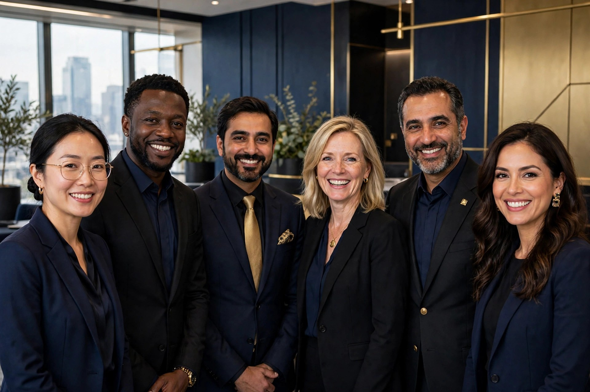

One World. One Recognition.
Recognizing notaries globally.
Ou ap li nan Kreyòl Ayisyen. Chwazi lang ou pi wo a. Tout lang yo kouvri.
Green dot = Hague Member Blue dot = Non-Hague Member Amber = Highlight / Recognition
H = Hague Member - simplified recognition path. NH = Non-Hague Member - expanded recognition path. Every country is shown with its country name and H / NH label. 6px labels on dots in the interactive version.
Some systems participate in the Hague framework and others do not. Documents Without Borders Global shows real country names next to each dot - Hague members and Non-Hague members - so every country, with its own formal process, is treated with equal dignity.
Focus: inbound recognition to the United States and world-to-world recognition between professionals.
H = Hague Member - simplified recognition path. NH = Non-Hague Member - expanded recognition path.
The rebrand is not a logo on a blank page - it is global execs in the room, together.

To use your own uploaded audience photos instead, replace the 4 files in /assets/ with the same filenames - no code change needed. Keep the original globe intact - only Hague / Non-Hague dots are added.
Share your name, role and location. Joining means stepping into a visible, celebrated global community.
An organization recognizing notaries globally. Mission: recognition, belonging, and betterment of Notarizationship.
H = Hague Member. NH = Non-Hague Member. Both are treated with equal dignity, with different formal recognition paths.
No. The mission is recognizing notaries globally, not client acquisition or document services.
Use the Join section above and send your name, role, and location.
Comprehensive language coverage, starting with Kreyol Ayisyen, then Arabic, then English variants including UK, Canada, and Australia.
Email: contact@documentswithoutborders.org
Organization: Documents Without Borders Global
Focus: Recognizing notaries globally - One World. One Recognition.
Title: Apostille / Authentication Facilitator